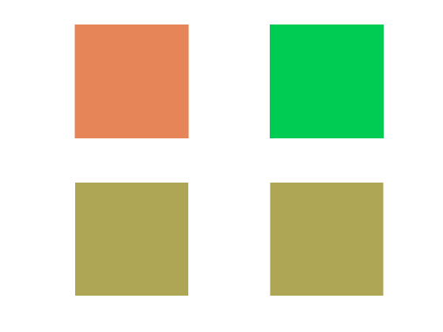
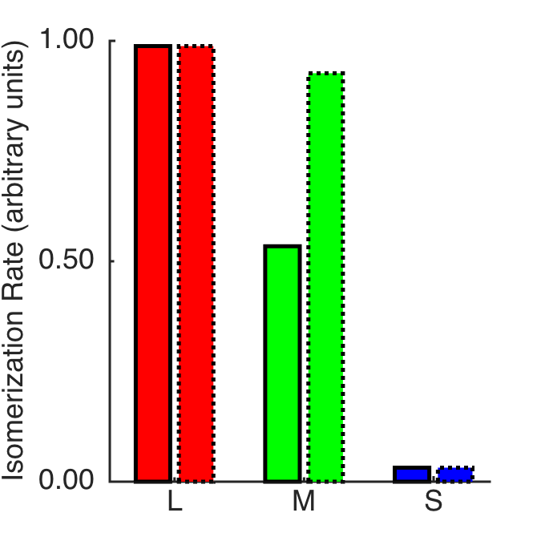
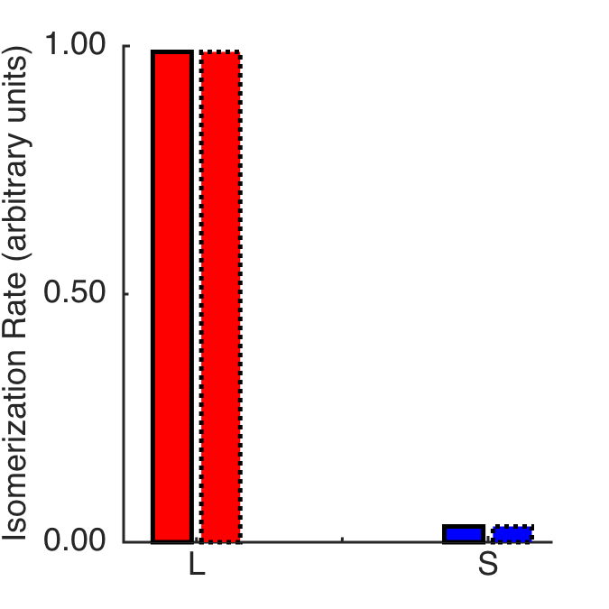
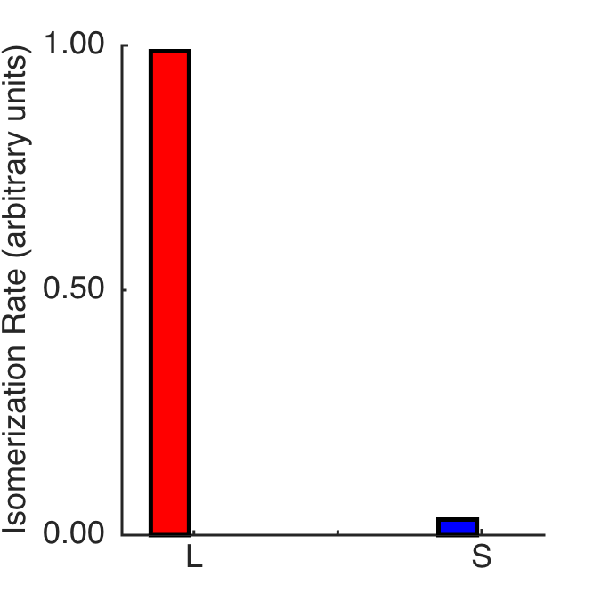
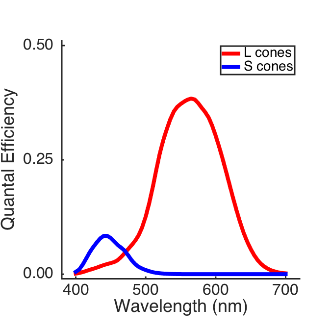
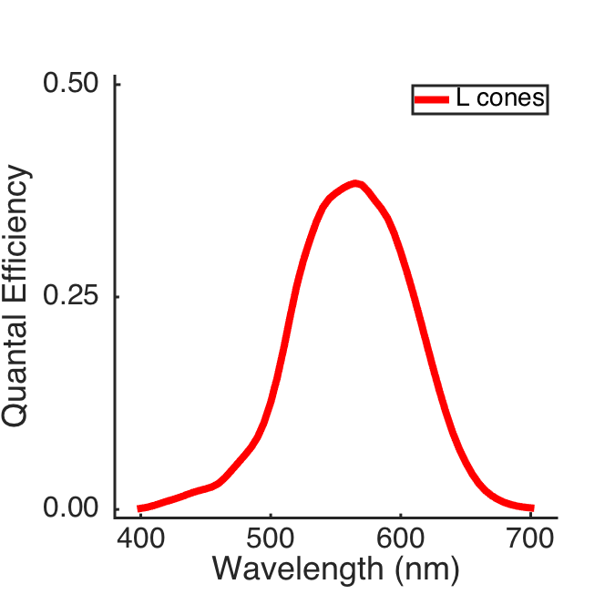
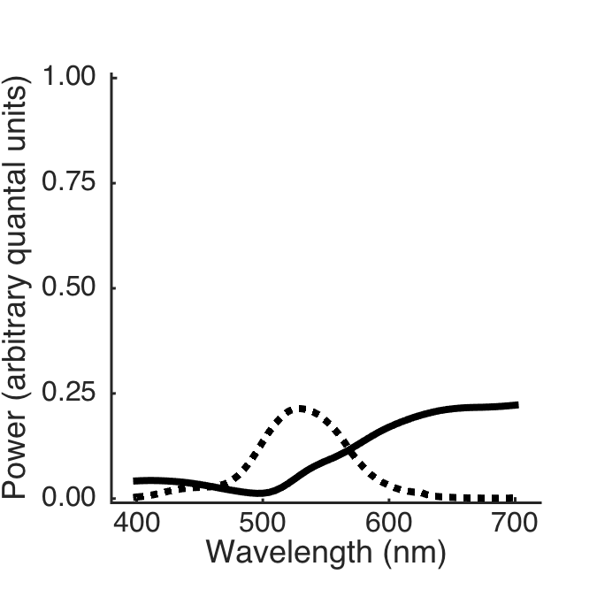
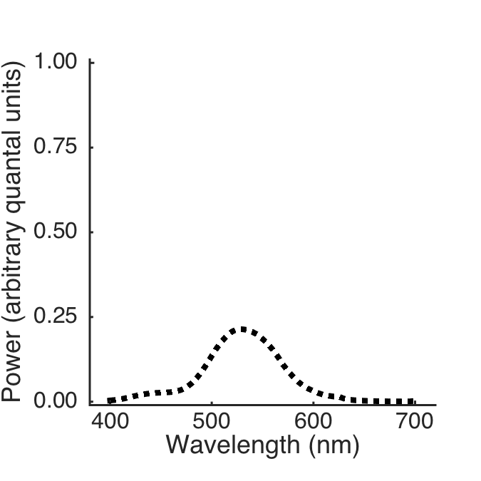

Contents
- Clear, define, etc.
- Hello
- Figure parameters
- Load data and compute a metameric pair
- Render the two lights in sRGB for a trichromat and for a deuteranope
- Make a bar plot of trichromatic cone responses to the two lights
- Make a bar plot of dichromatic cone responses to the two lights
- Make the dichromatic cone sensitivity figure
- Make the metamer figure
function varargout = FigDichromMetam(varargin) % % Show human cone sensitivities and a metamer for a dichromat. % % This for a deutan (L and S cone) observer, otherwise matched to FigTrichromMetam. % % This version doesn't do things that I ended up using in the Annual Review % paper, but is related enough that it lives here. What this does do is % help produce images for a series of slides that help explain the effects % of adding a new cone to the mosaic. These are in preparation for an ARVO % 2015 talk. % % See also FigTrichromMetamer, ../X_SpatialChromaticAliasing/FigSpatioChromaticAliasing. % % 4/10/15 dhb Wrote it. % 4/20/15 dhb Bring into the validation fold varargout = UnitTest.runValidationRun(@ValidationFunction, nargout, varargin); end function ValidationFunction(runTimeParams)
Clear, define, etc.
ieInit;
Hello
UnitTest.validationRecord('SIMPLE_MESSAGE', sprintf('%s',mfilename)); outputDir = sprintf('%s_Output',mfilename); if (~exist(outputDir,'dir')) mkdir(outputDir); end
Figure parameters
curDir = pwd; masterFigParamsDir = getpref('bfScripts','masterFigParamsDir'); cd(masterFigParamsDir); figParams = MasterFigParams; cd(curDir); if (exist('../SecondaryFigParams','file')) cd .. figParams = SecondaryFigParams(figParams); cd(curDir); end
Load data and compute a metameric pair
% Cone sensitivities. Let's be pros and show unnormalized quantal % sensitivities. And, use isetbio to generate the data for the plots. sensor = sensorCreate('human'); wave = sensorGet(sensor,'wave'); S_in = WlsToS(wave); T_conesQE_in = sensorGet(sensor,'spectral qe')'; S = [400 5 61]; wls = SToWls(S); T_conesQETrichrom = SplineCmf(S_in,T_conesQE_in(2:4,:),S); T_conesQEDichrom = SplineCmf(S_in,T_conesQE_in([2 4],:),S); UnitTest.validationData('S', S); UnitTest.validationData('T_conesQETrichrom', T_conesQETrichrom); UnitTest.validationData('T_conesQEDichrom', T_conesQEDichrom); % Energy sensitivities. We need these to convert the isomerizations into % the right relative scaling for SRGB rendering. T_conesTrichrom = EnergyToQuanta(S,T_conesQETrichrom')'; T_conesTrichrom = T_conesTrichrom/max(T_conesTrichrom(:)); for ii = 1:3 renderingScaleFactors(ii) = 1/max(T_conesTrichrom(ii,:)); end UnitTest.validationData('renderingScaleFactors', renderingScaleFactors); % An SPD and its cone excitations. We treat these as in quantal units, though since we never % say in the paper what they are, it doesn't really matter where we got % them. load sur_mccBabel theSpd = SplineSpd(S_mccBabel,... figParams.spectralConstant*ones(size(sur_mccBabel(:,figParams.whichMCCSquare))) + ... figParams.mccSquareScale*sur_mccBabel(:,figParams.whichMCCSquare) + ... figParams.mccSquareScale2*sur_mccBabel(:,figParams.whichMCCSquare2) + ... figParams.mccSquareScale3*sur_mccBabel(:,figParams.whichMCCSquare3),S); theSpdConesDichrom = T_conesQEDichrom*theSpd; theSpdConesTrichrom = T_conesQETrichrom*theSpd; UnitTest.validationData('theSpd', theSpd); UnitTest.validationData('theSpdConesDichrom', theSpdConesDichrom); UnitTest.validationData('theSpdConesTrichrom', theSpdConesTrichrom); % Some monitor primaries load B_monitor B = SplineSpd(S_monitor,B_monitor(:,2:3),S); UnitTest.validationData('B', B); % Compute monitor metamer for spd theMetamer = B*inv(T_conesQEDichrom*B)*T_conesQEDichrom*theSpd; theMetamerConesDicrhom = T_conesQEDichrom*theMetamer; theMetamerConesTrichrom = T_conesQETrichrom*theMetamer; UnitTest.validationData('theMetamer', theMetamer); UnitTest.validationData('theMetamerConesDichrom', theMetamerConesDicrhom); UnitTest.validationData('theMetamerConesTrichrom', theMetamerConesTrichrom);
Render the two lights in sRGB for a trichromat and for a deuteranope
We need everything rendered into SRGB with a common scale factor. This was chosen by some fussing, and is matched to what we do in FigSpatioChromaticAliasing.
The rendering for a deuteranope is done using an algorithm that the Wandell lab implmented in ISETBIO
renderScalar = 0.4; patchPixels = 50; theSpdLMSImage = zeros(patchPixels,patchPixels,3); theMetamerLMSImage = zeros(patchPixels,patchPixels,3); for ii = 1:3 theSpdLMSImage(:,:,ii) = theSpdConesTrichrom(ii); theMetamerLMSImage(:,:,ii) = theMetamerConesTrichrom(ii); end % Deutan rendering theSpdDeutanLMSImage = lms2lmsDichromat(theSpdLMSImage, 2, 'linear'); theMetamerDeutanLMSImage = lms2lmsDichromat(theMetamerLMSImage, 2, 'linear'); % Common image scaling maxVal = max(theSpdLMSImage(:)); for ii = 1:3 theSpdLMSImage(:,:,ii) = renderScalar*theSpdLMSImage(:,:,ii)*renderingScaleFactors(ii)/maxVal; theMetamerLMSImage(:,:,ii) = renderScalar* theMetamerLMSImage(:,:,ii)*renderingScaleFactors(ii)/maxVal; theSpdDeutanLMSImage(:,:,ii) = renderScalar*theSpdDeutanLMSImage(:,:,ii)*renderingScaleFactors(ii)/maxVal; theMetamerDeutanLMSImage(:,:,ii) = renderScalar*theMetamerDeutanLMSImage(:,:,ii)*renderingScaleFactors(ii)/maxVal; end % Conversion to SRGB theSpdSRGBImage = lms2srgb(theSpdLMSImage); theMetamerSRGBImage = lms2srgb(theMetamerLMSImage); theSpdDeutanSRGBImage = lms2srgb(theSpdDeutanLMSImage); theMetamerDeutanSRGBImage = lms2srgb(theMetamerDeutanLMSImage); UnitTest.validationData('theSpdSRGBImage', theSpdSRGBImage); UnitTest.validationData('theMetamerSRGBImage', theMetamerSRGBImage); UnitTest.validationData('theSpdDeutanSRGBImage', theSpdDeutanSRGBImage); UnitTest.validationData('theMetamerDeutanSRGBImage', theMetamerDeutanSRGBImage); % Show and save the SRGB images These are all just uniform patches, so we % don't worry about spatial resolution or anything like that. figure; clf; subplot(2,2,1); imshow(theSpdSRGBImage); subplot(2,2,2); imshow(theMetamerSRGBImage); subplot(2,2,3); imshow(theSpdDeutanSRGBImage); subplot(2,2,4); imshow(theMetamerDeutanSRGBImage); imwrite(theSpdSRGBImage,fullfile(outputDir,[mfilename '_' 'theSpdSRGBImage' '.' figParams.imType]),figParams.imType); imwrite(theMetamerSRGBImage,fullfile(outputDir,[mfilename '_' 'theMetamerSRGBImage' '.' figParams.imType]),figParams.imType); imwrite(theSpdDeutanSRGBImage,fullfile(outputDir,[mfilename '_' 'theSpdDeutanSRGBImage' '.' figParams.imType]),figParams.imType); imwrite(theMetamerDeutanSRGBImage,fullfile(outputDir,[mfilename '_' 'theMetamerDeutanSRGBImage' '.' figParams.imType]),figParams.imType); % Check the output scaling of the SRGB images. SRGBMaxVal = max([theSpdSRGBImage(:)' theMetamerSRGBImage(:)' theSpdDeutanSRGBImage(:)' theMetamerDeutanSRGBImage(:)']); fprintf('Max SRGB scaling is %0.2f\n',SRGBMaxVal); UnitTest.validationData('SRGBMaxVal', SRGBMaxVal);
Max SRGB scaling is 0.90
Make a bar plot of trichromatic cone responses to the two lights
mid1 = 1; mid2 = 2.5; mid3 = 4.0; sep = 0.25; figParams.figName = 'FigTrichromHistoDichromMetamers'; figParams.barWidth = 0.4; figParams.barLineWidth = 5; figure; clf; hold on set(gcf,'Position',[100 100 figParams.sqSize figParams.sqSize]); set(gca,'FontName',figParams.fontName,'FontSize',figParams.axisFontSize,'LineWidth',figParams.axisLineWidth); xlim([sep mid3+sep+figParams.barWidth]); h1 = bar([mid1 - sep]',[theSpdConesTrichrom(1)],figParams.barWidth,'FaceColor','r','LineWidth',figParams.barLineWidth); h2 = bar([mid1 + sep]',[theMetamerConesTrichrom(1)],figParams.barWidth,'FaceColor','r','LineWidth',figParams.barLineWidth,'LineStyle',':'); h3 = bar([mid2 - sep]',[theSpdConesTrichrom(2)],figParams.barWidth,'FaceColor','g','LineWidth',figParams.barLineWidth); h4 = bar([mid2 + sep]',[theMetamerConesTrichrom(2)],figParams.barWidth,'FaceColor','g','LineWidth',figParams.barLineWidth,'LineStyle',':'); h5 = bar([mid3 - sep]',[theSpdConesTrichrom(3)],figParams.barWidth,'FaceColor','b','LineWidth',figParams.barLineWidth); h6 = bar([mid3 + sep]',[theMetamerConesTrichrom(3)],figParams.barWidth,'FaceColor','b','LineWidth',figParams.barLineWidth,'LineStyle',':'); set(gca,'XTick',[mid1 mid2 mid3]); set(gca,'XTickLabel',{'L' 'M' 'S'},'FontName',figParams.fontName,'FontSize',figParams.labelFontSize+4); ylim([0 1]); set(gca,'YTick',[0 0.5 1]); set(gca,'YTickLabel',{' 0.00 ', ' 0.50 ', ' 1.00 '},'FontName',figParams.fontName,'FontSize',figParams.labelFontSize); ylabel('Isomerization Rate (arbitrary units)','FontName',figParams.fontName,'FontSize',figParams.labelFontSize); FigureSave(fullfile(outputDir,[mfilename '_' figParams.figName]),gcf,figParams.figType);
Make a bar plot of dichromatic cone responses to the two lights
figParams.figName = 'FigDichromHistoDichromMetamers'; figParams.barWidth = 0.4; figParams.barLineWidth = 5; figure; clf; hold on set(gcf,'Position',[100 100 figParams.sqSize figParams.sqSize]); set(gca,'FontName',figParams.fontName,'FontSize',figParams.axisFontSize,'LineWidth',figParams.axisLineWidth); xlim([sep mid3+sep+figParams.barWidth]); h1 = bar([mid1 - sep]',[theSpdConesTrichrom(1)],figParams.barWidth,'FaceColor','r','LineWidth',figParams.barLineWidth); h2 = bar([mid1 + sep]',[theMetamerConesTrichrom(1)],figParams.barWidth,'FaceColor','r','LineWidth',figParams.barLineWidth,'LineStyle',':'); h5 = bar([mid3 - sep]',[theSpdConesTrichrom(3)],figParams.barWidth,'FaceColor','b','LineWidth',figParams.barLineWidth); h6 = bar([mid3 + sep]',[theMetamerConesTrichrom(3)],figParams.barWidth,'FaceColor','b','LineWidth',figParams.barLineWidth,'LineStyle',':'); set(gca,'XTick',[mid1 mid2 mid3]); set(gca,'XTickLabel',{'L' ' ' 'S'},'FontName',figParams.fontName,'FontSize',figParams.labelFontSize+4); ylim([0 1]); set(gca,'YTick',[0 0.5 1]); set(gca,'YTickLabel',{' 0.00 ', ' 0.50 ', ' 1.00 '},'FontName',figParams.fontName,'FontSize',figParams.labelFontSize); ylabel('Isomerization Rate (arbitrary units)','FontName',figParams.fontName,'FontSize',figParams.labelFontSize); FigureSave(fullfile(outputDir,[mfilename '_' figParams.figName]),gcf,figParams.figType); % and just to the first light for exaplanatory purposes figParams.figName = 'FigDichromHistoDichromMetamersOne'; figParams.barWidth = 0.4; figParams.barLineWidth = 5; figure; clf; hold on set(gcf,'Position',[100 100 figParams.sqSize figParams.sqSize]); set(gca,'FontName',figParams.fontName,'FontSize',figParams.axisFontSize,'LineWidth',figParams.axisLineWidth); xlim([sep mid3+sep+figParams.barWidth]); h1 = bar([mid1 - sep]',[theSpdConesTrichrom(1)],figParams.barWidth,'FaceColor','r','LineWidth',figParams.barLineWidth); h5 = bar([mid3 - sep]',[theSpdConesTrichrom(3)],figParams.barWidth,'FaceColor','b','LineWidth',figParams.barLineWidth); set(gca,'XTick',[mid1 mid2 mid3]); set(gca,'XTickLabel',{'L' ' ' 'S'},'FontName',figParams.fontName,'FontSize',figParams.labelFontSize+4); ylim([0 1]); set(gca,'YTick',[0 0.5 1]); set(gca,'YTickLabel',{' 0.00 ', ' 0.50 ', ' 1.00 '},'FontName',figParams.fontName,'FontSize',figParams.labelFontSize); ylabel('Isomerization Rate (arbitrary units)','FontName',figParams.fontName,'FontSize',figParams.labelFontSize); FigureSave(fullfile(outputDir,[mfilename '_' figParams.figName]),gcf,figParams.figType); 
Make the dichromatic cone sensitivity figure
figParams.figName = 'FigDichromCones'; figParams.xLimLow = 380; figParams.xLimHigh = 720; figParams.xTicks = [400 500 600 700]; figParams.xTickLabels = {'400' '500' '600' '700'}; figParams.yLimLow = -0.01; figParams.yLimHigh = 0.51; figParams.yTicks = [0.0 0.25 0.5]; figParams.yTickLabels = {' 0.00 ' ' 0.25 ' ' 0.50 '}; theFig = figure; clf; hold on set(gcf,'Position',[100 100 figParams.sqSize figParams.sqSize]); set(gca,'FontName',figParams.fontName,'FontSize',figParams.axisFontSize,'LineWidth',figParams.axisLineWidth); plot(wls,T_conesQEDichrom(1,:)','r','LineWidth',figParams.lineWidth); plot(wls,T_conesQEDichrom(2,:)','b','LineWidth',figParams.lineWidth); xlim([figParams.xLimLow figParams.xLimHigh]); set(gca,'XTick',figParams.xTicks); set(gca,'XTickLabel',figParams.xTickLabels); xlabel('Wavelength (nm)','FontName',figParams.fontName,'FontSize',figParams.labelFontSize); ylim([figParams.yLimLow figParams.yLimHigh]); ylabel('Quantal Efficiency','FontName',figParams.fontName,'FontSize',figParams.labelFontSize); set(gca,'YTick',figParams.yTicks); set(gca,'YTickLabel',figParams.yTickLabels); legend({' L cones ' ' S cones '},'Location','NorthEast','FontSize',figParams.legendFontSize); axis('square'); FigureSave(fullfile(outputDir,[mfilename '_' figParams.figName]),theFig,figParams.figType); figParams.figName = 'FigLConeOnlyCones'; figParams.xLimLow = 380; figParams.xLimHigh = 720; figParams.xTicks = [400 500 600 700]; figParams.xTickLabels = {'400' '500' '600' '700'}; figParams.yLimLow = -0.01; figParams.yLimHigh = 0.51; figParams.yTicks = [0.0 0.25 0.5]; figParams.yTickLabels = {' 0.00 ' ' 0.25 ' ' 0.50 '}; theFig = figure; clf; hold on set(gcf,'Position',[100 100 figParams.sqSize figParams.sqSize]); set(gca,'FontName',figParams.fontName,'FontSize',figParams.axisFontSize,'LineWidth',figParams.axisLineWidth); plot(wls,T_conesQEDichrom(1,:)','r','LineWidth',figParams.lineWidth); xlim([figParams.xLimLow figParams.xLimHigh]); set(gca,'XTick',figParams.xTicks); set(gca,'XTickLabel',figParams.xTickLabels); xlabel('Wavelength (nm)','FontName',figParams.fontName,'FontSize',figParams.labelFontSize); ylim([figParams.yLimLow figParams.yLimHigh]); ylabel('Quantal Efficiency','FontName',figParams.fontName,'FontSize',figParams.labelFontSize); set(gca,'YTick',figParams.yTicks); set(gca,'YTickLabel',figParams.yTickLabels); legend({' L cones '},'Location','NorthEast','FontSize',figParams.legendFontSize); axis('square'); FigureSave(fullfile(outputDir,[mfilename '_' figParams.figName]),theFig,figParams.figType); 
Make the metamer figure
figParams.figName = 'FigMetamDichrom'; figParams.xLimLow = 380; figParams.xLimHigh = 720; figParams.xTicks = [400 500 600 700]; figParams.xTickLabels = {'400' '500' '600' '700'}; figParams.yLimLow = -0.01; figParams.yLimHigh = 1.01; figParams.yTicks = [0.0 0.25 0.5 0.75 1.0]; figParams.yTickLabels = {' 0.00 ' ' 0.25 ' ' 0.50 ' ' 0.75 ' ' 1.00 '}; theFig = figure; clf; hold on set(gcf,'Position',[100 100 figParams.sqSize figParams.sqSize]); set(gca,'FontName',figParams.fontName,'FontSize',figParams.axisFontSize,'LineWidth',figParams.axisLineWidth); plot(wls,theSpd,'k','LineWidth',figParams.lineWidth); plot(wls,theMetamer,'k:','LineWidth',figParams.lineWidth); xlim([figParams.xLimLow figParams.xLimHigh]); set(gca,'XTick',figParams.xTicks); set(gca,'XTickLabel',figParams.xTickLabels); xlabel('Wavelength (nm)','FontName',figParams.fontName,'FontSize',figParams.labelFontSize); ylim([figParams.yLimLow figParams.yLimHigh]); ylabel('Power (arbitrary quantal units)','FontName',figParams.fontName,'FontSize',figParams.labelFontSize); set(gca,'YTick',figParams.yTicks); set(gca,'YTickLabel',figParams.yTickLabels); axis('square'); FigureSave(fullfile(outputDir,[mfilename '_' figParams.figName]),theFig,figParams.figType); % and just the second light for explanatory purposes figParams.figName = 'FigMetamDichromTwo'; figParams.xLimLow = 380; figParams.xLimHigh = 720; figParams.xTicks = [400 500 600 700]; figParams.xTickLabels = {'400' '500' '600' '700'}; figParams.yLimLow = -0.01; figParams.yLimHigh = 1.01; figParams.yTicks = [0.0 0.25 0.5 0.75 1.0]; figParams.yTickLabels = {' 0.00 ' ' 0.25 ' ' 0.50 ' ' 0.75 ' ' 1.00 '}; theFig = figure; clf; hold on set(gcf,'Position',[100 100 figParams.sqSize figParams.sqSize]); set(gca,'FontName',figParams.fontName,'FontSize',figParams.axisFontSize,'LineWidth',figParams.axisLineWidth); plot(wls,theMetamer,'k:','LineWidth',figParams.lineWidth); xlim([figParams.xLimLow figParams.xLimHigh]); set(gca,'XTick',figParams.xTicks); set(gca,'XTickLabel',figParams.xTickLabels); xlabel('Wavelength (nm)','FontName',figParams.fontName,'FontSize',figParams.labelFontSize); ylim([figParams.yLimLow figParams.yLimHigh]); ylabel('Power (arbitrary quantal units)','FontName',figParams.fontName,'FontSize',figParams.labelFontSize); set(gca,'YTick',figParams.yTicks); set(gca,'YTickLabel',figParams.yTickLabels); axis('square'); FigureSave(fullfile(outputDir,[mfilename '_' figParams.figName]),theFig,figParams.figType); 
end